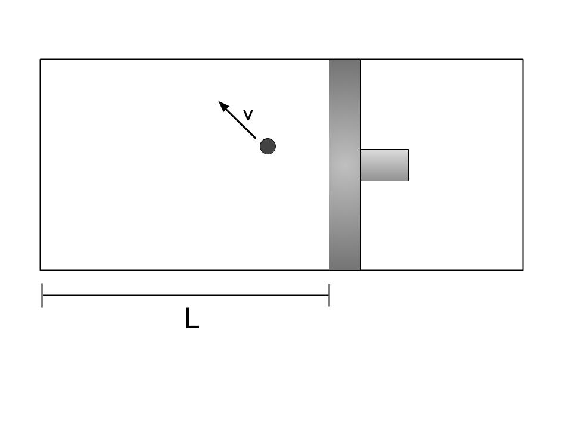

Part I- Thermodynamics
May 2019
Index
- Introduction
- The "Zeroeth" Law
- Heat, Work, Energy: The First Law
- The Ideal Gas Law
- Microstates and Macrostates
- Entropy
Section 1.1 - Introduction
This is going to be the first in a series of posts regarding black hole thermodynamics, which, broadly speaking is my own personal area of interest. In this series I will attempt to give a broad (though technical) overview of the field and elaborate on many ofthe particulars as they come up.
But before we dive in, it becomes us to elaborate an overview of the field. In brief, black hole thermodynamicsl is all about the interplay between gravitational physics and quantum field theory- two fields which even the most amateur physicist is likely to know do not tend to agree. Despite the two fields being supremely accurate descriptions of natural phenomena at certain scales, attempting to apply the laws of one to the other leads frequently to disastorous results.
In a region of space at or near the event horizon of a black hole, the mingling ofthe two lines of thought are simply unavoidable. For in the event of a strong vacuum fluctuation in such a region, in such circumstances so that one of the pairs produced in that phenomena is captured by the black hole and the other is not, we are left with the recourse that the black hole itself must "radiate" in some capacity- though the particulars of such radiation are open to a certain level of interpretation. However, the reader can begin to see now the potential links between this field and quantum gravity (and we will see links to quantum information theory too- all in due time!)
Speaking, conveniently, of particulars, one of the first things that needs to be covered in a ground-up approach is elementary thermal physics. So in the spirit of walking before we run, lets take some time to cover the necessities in that field.
Section 1.2 - The Zeroeth Law
The most important concept to discuss in this article is entropy- we will see later that there are strong parallels between thermodynamic entropy and informational entropy that motivate much of the work in the field. However,before we touch on this idea, we should cover even more elementary material: the zeroeth and first laws of thermodynamics.
Like all sane people, we're going to index at zero and start with that law. The zeroeth law of thermodynamics is fairly intuitive.
ZEROETH LAW:If two thermal systems are in thermal equilibrium with a third system, then they are in thermal equilibrium with each other.
For the mathematicians in the room, this is essentially a statement asserting that thermal equilibrium obeys the transitive property. Further, we consider it obvious that the notion of thermal equilibrium is reflexive and symmetric- which makes thermal equilibrium an equivalence relation. We call elements belonging to a given partition of this equivalence class "isotherms".
That's all well and good, but we're still under the hood of some jargon- what exactly is thermal equilibrium? In order to answer that, I'm going to have to introduce some more jargon, but if you can stick through it, you'll understand soon enough.
We say systems are in thermal equilibrium if, on average, no thermal energy is being transfered between them. We say on average because in the real world, quantum mechanics plays a part in physics and will in fact result in minor changes to levels of thermal energy at an instant in time- but in the long run these average to zero. We've traded one term for another: we now need to ask what thermal energy is.
I'm so glad you asked.
Section 1.3 - Heat, Work, and Energy: The First Law
Thermal energy is difficult to explain directly because energy itself bears some explanation- the energy of a system may be thought of as that body's capacity to do work: to apply some force perpendicular to some distance traveled in a given direction. Energy itself takes form in, broadly speaking, two ways: kinetic, the energy due to the motion of a body represented for our purposes by $T$ and given by some variation of the quadratic form $mv^2$ (we also see rotational and vibrational modes of kinetic energy- they too have a quadratic form. More on them later.) We also have potential energies, which are dependent on a body's relation to other bodies in a positional sense. We denote potential energy with $V$ and write that the total energy, $U$, is given by the equation $$U = T + V.$$ In thermodynamics, we have two ways for changes in energy to express themselves: in the forms of work, being energy transmitted actively and quantifiably via some external mechanism- the cannonical example being the compressive action of a piston on a cylindrical container. We often denote work with the symbol $W$.
We also have a notion of spontaneous energy changes is systems, which we call "heat", and represent with the symbol $Q$. This spontaneity is key- the energy transfer not arise out of the external action of some mechanism, or we would have to classify it as work. There are three well-described ways that heat may be transferred: through conduction, convection, and radiation. The particulars of each process are not material at the moment, and I will leave it to the curious to familiarize themselves with the notions if they are not conversant already. They bare mentioning now because we will need some understanding of radiative processes later.
As we might say the total energy in a dynamical system is $U = T + V$, we say that the total change in energy in a thermal system is give by $\Delta U = W + Q$. This is essentially a statement of the first law of thermodynamics, but we might as well make that explicit.
FIRST LAW: The total energy of an isolated system (i.e. any system free from outside interaction) is conserved and the changes in energy of a closed system (i.e. one free from exchanges in matter but free to exchange energy) are given by $$\Delta U = W + Q$$ following the IUPAC conention.
At this point, it is necessary to introduce the idea of temperature and its relationship to thermal energy. To do that, I want to introduce yet another element into the mix.
1.4 - The Ideal Gas Law
The ideal gas law is a result that predicts certain properties of gasses in "ideal" conditions- detailed below. It was first concieved of as an amalgamation of many results chemists had found in the early 19th century, but may also be thought of as a result derived from the equipartition theorem. One's perspective relies on where they start and what they take to be a first principle; I was taught this way and so that's the way I'm going to present the material.
The particular assumptions we make for this derivation are in line with the assumptions of the kinetic theory of gasses- as follows:
- Gas particles (points, atoms, or molecules) obey Newton's laws of motion
- Particles move randomly in a varying distribution of speeds, which do not change.
- Particles undergo elastic collisions with each other and with the edges of their containers
- The number of particles in a gas is large, but the mean seperation between particles is large compared to their cross-sectional area
The law is written as follows: $$PV = Nk_BT$$ where $P$ is the pressure of our gas, $V$ is the volume it fills, $T$ is the temperature of the system, $N$ is the number of particles in the gas, and $k_B$ is Boltzmann's constant.
From this equation we can find a link between temperature and velocity, and so a link between temperature and kinetic energy. We imagine an ideal gas contained in a piston-  In a very rough way, we can talk about average pressure in terms of the average force- the average change in velocity in a given time. From here we begin: Starting with the pressure, and assuming that pressure is imparted solely perpendicular to the face of the piston, $$ \overline{P} = \frac{\overline{F}}{A} $$ We pick coordinates so that the piston is aligned with the $x$-axis along its length. Then we can say that the time it takes for a particle to bounce from the piston cap to the end of the cylinder and back again is $\Delta t = \frac{2L}{v_x}$. We continue- $$ \frac{\overline{F}}{A} = \frac{m \Delta v_x}{A \Delta t} $$ But $\Delta v_x$ is just the differences between initial and final velocity of the piston: $\Delta v_x = v_x - (-v_x) = 2v_x$. We recover: $$ \frac{m \Delta v_x}{A \Delta t} = \frac{m(2v_x)}{A\left(\frac{2L}{v_x}\right)} \\ = \frac{mv_x^2}{V} $$ For a system of $N$ particles in a volume $V$, we get $\overline{P}V = Nm\overline{v_x^2}$. Equating this with the ideal gas law, $$ \overline{P}V = Nm\overline{v_x^2} = Nk_bT \\ m\overline{v_x^2} = k_bT \\ \frac{1}{2}m\overline{v_x^2} = \frac{1}{2}k_BT $$ and so we find the average transitive kinetic energy is, upon making the same assumptions in the $y$ and $z$ directions, is $$ \overline{T_{\text{trans}}} = \frac{1}{2}m\overline{(v_x^2 + v_y^2 + v_z^2)} \\ = \frac{3}{2}k_BT $$ and thus we finally have a relationship between average kinetic energy and the temperature of a thermal system.
But that's not the whole story, is it? The discerning eye will note that this is only the translational kinetic energy. What about rotaional and vibrational energy? We have a theorem (for which I have a proof in Appendix A)
Equipartition Theorem: The average energy of any quadratic degree of freedom is $\frac{1}{2}k_BT$.
So any rotation, translation, or vibration gives an average energy of $\frac{1}{2}k_BT$. In a system with $N$ particles and no non-quadratic temperture-dependent forms of energy are present, then we say $U_{\text{thermal}} = \frac{1}{2}Nfk_BT$, where $f$ is the number of available degrees of freedom. We're now ready to move on.
1.5 - Microstates and Macrostates
In this last section before we finally talk about entropy, I want to introduce some additional terminology that we will be seeing frequently later on.
In physics, we frequently encounter two-state systems, in particular when one studies quantum mechanics and especially quantum information theory. If quantum computing succeeds as a field, it will be because some very clever people figure out how to reliably create and maintain qubits, which are essentially quantum-mechanical analogs of transistors. We're going to take an example from a slightly more macroscopic object: the two-state paramagnet.
A paramagnet is a magnet in which the individual particles constituting the magnet align themselves parallel or anti-parallel to an applied magnetic field.
We adopt the same verbiage as D.V. Schroeder in his textbook "Thermal Physics" (which I am already borrowing from), and call these individual particles "dipoles", due to their individual dipole moments being the actual object of our consideration rather than their particular physical form. At a quantum-mecanical scale, the measure of the individual dipole takes certain, discrete values. In our case, we simplify to strictly two states- this could be the result of a particular configuration of the material or perhaps simply a result of the specifics of our magnetic field. We say that the dipoles pointing one way, parallel, are positive or "up", and that the dipoles aligned anti-parallel are negative or "down".
Now we define the words heading this section. We call the specific situation of a dipole, i.e. that the first dipole is "up", that the second dipole is " down" and so on a "microstate". It is not only the sum of the results up and down of paramagnetic system,but also the order in which they arranged. We call a generalization of the microstates, where we simply say how many of our dipoles are up and how many are down a "macrostate". Specifying the microstate of a system gives you the macrostate implicitly, but the reverse is not true. The ambiguity requires another term: we call the number of microstates a given macrostate could inhabit the "multiplicity" of the macrostate. We can count the multiplicity of a macrostate using the choice function which should be familiar from a cursory study of combinatorics. In a two-state paramagnet, we write: $$ \binom{N}{N_\uparrow} = \frac{N!}{N_\uparrow! N_\downarrow!} $$
Multiplicity tends to expand extremely quickly with the increase in the number of particles in a system and with the number of energy states they may inhabit (as in an Einstein Solid). The growth is so large, in fact, that calculating the exact number quickly is very difficult, and when one requires such information it is more conventional to make approximations, many of which are very close and only grow closer with a greater number of particles.
Lets do an example: suppose we take an Einstein solid with $N$ particles and $q$ units of energy that we may distribute amongst them. The general formula for the multiplicity of an entire system of this kind is given by $$ \binom{q+N-1}{q}. $$ This gives us the total number of different arrangements of energy units across the whole system- but as one again, slightly familiar with the basics of enumeration could see fairly quickly, these arrangements are not equitably distributed. Rather, there are some arrangements which are more likely than others- generally much more likely. For large systems, there are in fact very few of the allowable arrangements one would ever expect to observe. Lets explore the distribution of multiplicities for individual microstates.
Here are a few examples: if we take $N = 20$ and $ q = 100$, we get $$ \binom{119}{100} = 4910371215196105953021 $$ which seems like a large number of arrangements of state, but in matter of fact it is absolutely puny when we consider that the number of particles that make up the matter we are comfortable dealing with in "ordinary life" are on the order of $10^{23}$, not counting the energy we might allocate to such a system. For example, say we take $10^{23}$ particles with $10^23$ "units" of energy distributed amongst them. The multiplicity of this system is given by $$ \binom{2 \times 10^{23}}{(10^{23})(10^{23})} = \frac{(2 \times 10^{23)!}}{(10^{23})!(10^{23})!} \\ \\ \approx \frac{\sqrt{2\pi (2\times 10^{23})} \left(\frac{2 \times 10^{23}}{e}\right)^{2 \times 10^{23}}} {\left(\sqrt{2 \pi 10^{23}}\left(\frac{10^{23}}{e}\right) ^{10^{23}}\right)^2} \\ \\ = \frac{2\sqrt{\pi 10^{23}}{2 \pi 10^ 23}\frac{\left(\frac{2 \times 10^{23}}{e}\right)^{2 \times 10^{23}}} {\left(\frac{10^{23}}{e}\right)^{2 \times 10^{23}}}\\ \\ = \frac{2^{2 \times10^{23}}}{\sqrt{\pi 10^{23}}} $$
But it is cumbersome to continually deal with the large numbers that multiplicities present, especially when one makes calculations about systems one might encounter in a practical setting. We instead prefer to discuss a quantity that is a representative of this quantity, but shrunk